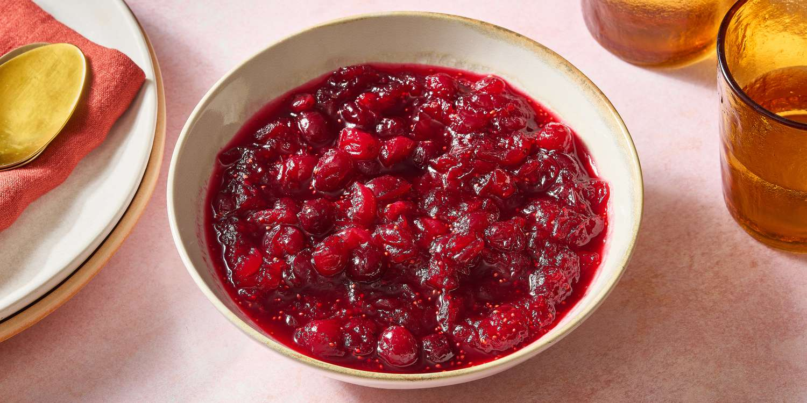

Cranberry sauce

Description
Cranberry sauce is a must-have for holiday dinners, and this fresh, homemade version is one I make every year. It's naturally sweet, bright, zingy, and delightfully chunky — the ideal texture to spoon over anything and everything on your plate!
Ingredients:
4 cups (about a 12-ounce package) fresh or frozen cranberries
½ cup honey or maple syrup, or more as desired
½ cup orange juice
½ cup water
orange zest, optional
Steps:
- Boil the orange juice mixture. In a saucepan over medium-high heat, add the water, orange juice, and honey and bring to a boil.
- Add the cranberries and give everything stir.
- Simmer the sauce. Bring the mixture back to a boil, then reduce the heat to a simmer. Let it simmer for 5 to 10 minutes while stirring occasionally. The cranberries will burst (that's what you want) and the sauce will start to thicken.
- Let it cool. Turn the heat off and let it cool for 15 minutes. Then transfer it to a container and place it in the fridge to chill and thicken up.